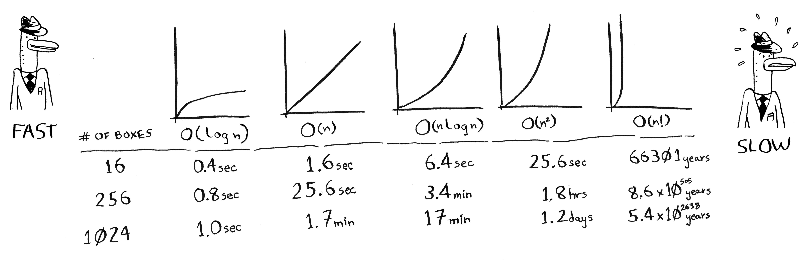

一般而言，对于包含 个元素的列表，用二分查找最多需要 步，而简单查找最多需要 步。
本书使用大 O 表示法讨论运行时间时， 指的都是 。
仅当列表是有序的时候，二分查找才管用。
二分查找的 Python 代码：
def binary_search(list, item): # low and high keep track of which part of the list you'll search in. low = 0 high = len(list) - 1 # While you haven't narrowed it down to one element ... while low <= high: # ... check the middle element mid = (low + high) // 2 guess = list[mid] # Found the item. if guess == item: return mid # The guess was too high. if guess > item: high = mid - 1 # The guess was too low. else: low = mid + 1 # Item doesn't exist return None my_list = [1, 3, 5, 7, 9] print(binary_search(my_list, 3)) # => 1 # 'None' means nil in Python. We use to indicate that the item wasn't found. print(binary_search(my_list, -1)) # => None
更多内容详见书籍。
简单查找最多需要猜测的次数与列表长度相同，这被称为线性时间(linear time)。
二分查找则不同。如果列表包含 100个 元素，最多要猜 7 次；如果列表包含 40 亿个数字，最多需猜 32 次。厉害吧？二分查找的运行时间为对数时间(或 log 时间)。
随着列表的增长，二分查找的速度比简单查找快得多。 Bob 以为二分查找速度为简单查找的 15 倍，这不对:列表包含 10 亿个元素时，为 3300 万倍。有鉴于此，仅知道算法需要多长时间才能运行完毕还不够，还需知道运行时间如何随列表增长而增加。 这正是大O表示法的用武之地。
大O表示法指出了算法有多快。例如，假设列表包含 n 个元素。简单查找需要检查每个元素，因此需要执行 n 次操作。使用大O表示法，这个运行时间为 。单位秒呢？没有——大O表示法指的并非以秒为单位的速度。大O表示法让你能够比较操作数，它指出了算法运行时间的增速。
为检查长度为 n 的列表，二分查找需要执行 次操作。使用大O表示法，这个运行时间怎么表示呢？。
记住，大O表示法计算的是操作数。
除最糟情况下的运行时间外，还应考虑平均情况的运行时间，这很重要。
下面按从快到慢的顺序列出了你经常会遇到的 5 种大O运行时间：
下面按从快到慢的顺序列出了使用这些算法绘制网格所需的时间:

还有其他的运行时间，但这 5 种是最常见的。
这里做了简化，实际上，并不能如此干净利索地将大O运行时间转换为操作数，但就目前而言，这种准确度足够了。
当前，我们获得的主要启示如下：
阅读前一节时，你可能认为根本就没有运行时间为 的算法。让我来证明你错了!下面就是一个运行时间极长的算法。这个算法要解决的是计算机科学领域非常著名的旅行商问题，其计算时间增加得非常快，而有些非常聪明的人都认为没有改进空间。
更多内容详见书籍。